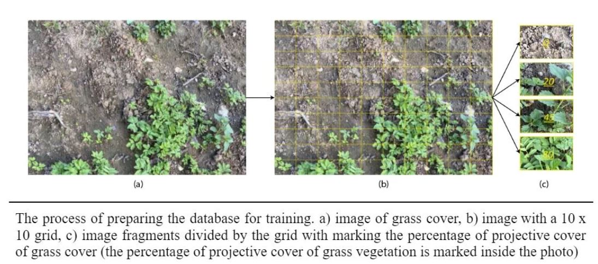
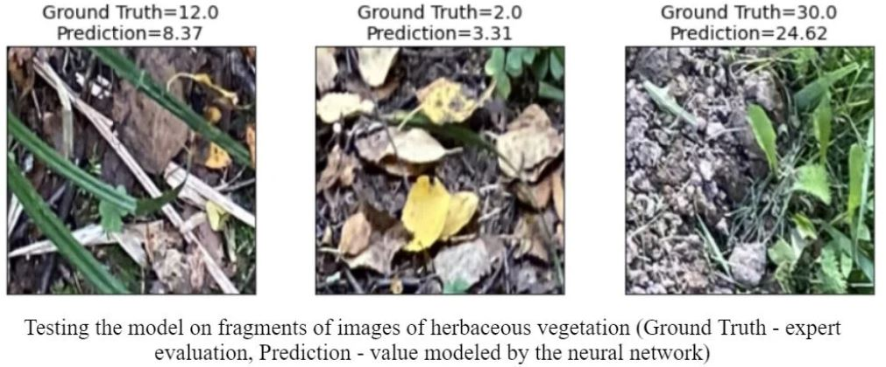
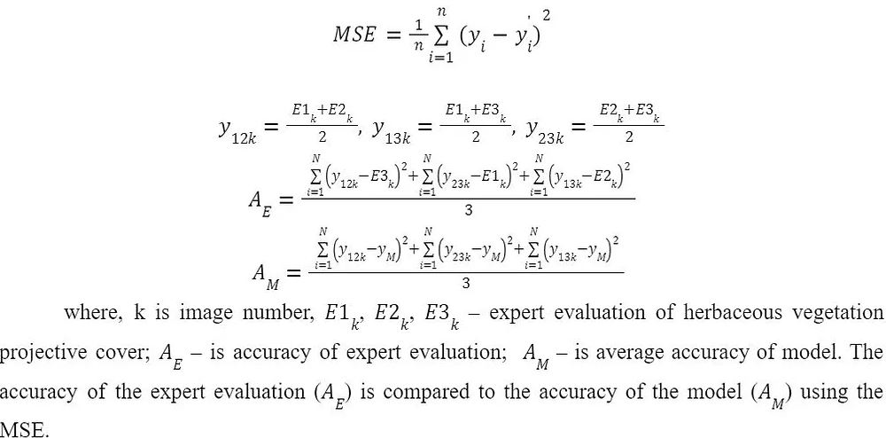
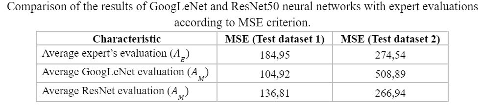
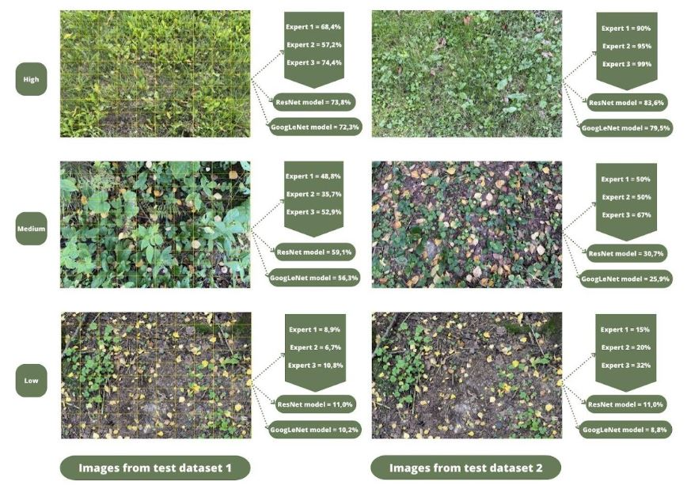

Evaluation of the projective cover of herbaceous vegetation using convolutional neural networks (CNN)
The process of describing of the grass grows conditions has played important role in environmental research. During that time in the natural science had developed a methodology of forests, grasslands, savannahs, urbanized areas assessment. Evaluation of the projective cover of herbaceous vegetation is one of the indicators of the state of ecosystems of pastures, lawns, parks. It is also used in forest rehabilitation strategies or for assessment of trends and status of the agricultural ecosystem.
Study area
The study area was located within the northwestern Moscow on border with Moscow region. The native flora is high antropogenically transformed and composed by secondary forest (e.g. Tilia cordata, Betula pendula, Picea abies et al.) with diverse herbaceous layer. Moreover, materials for training and testing were collected within park areas. Field survey were conducted from July to August in 2022.
Data collection
Dataset represented by different plant species, including lawns. This was done to include as many different leaf shapes (lanceolate, linear, etc.) as possible in the dataset to improve the model. The place for photographing was chosen based on the following thesis:
Every image was made from a square area at a height of 1 m from the surface using an IPhone 11 camera with resolution of 4032 x 3024 pixels.
Image Preprocessing
At the beginning, the images were divided into 2 parts with a resolution of 3024 x 2016. Then three experts marked 30 photos of 3024 x 2016 pixels in the first test sample by image. The images were split into tiles by 10 x 10 grid to improve the quality of the model. Two experts marked 10 photos by 10 x 10 grid also to test the model performance in the second test data. This is a time-consuming and labor-intensive process, but it allows comparing the result of work between the whole image and the tiles. Researchers in ecology with experience in determining the projective cover of herbaceous vegetation in situ were chosen as experts. The author marked 1500 tiles of 202 x 302 pixels images for training the neural network. Train dataset contains images, that were divide into 100 equally fragments on a 10 x 10 grid. Then the projective coverage of a fragment was estimated.
Proposed Algorithm
Deep convolutional neural networks (ResNet50 and GoogLeNet) were chosen to train the model. It was used pre-training models with ImageNet dataset. The code was created in the Python in the Google Colab software. The output layer of the CNN architecture was modified to be represented by a single neuron, which had to characterize the percentage of projective coverage. During the learning process, fragments of a 202 x 302-pixel photo with the known value of the percentage of grass projective cover determined by the author are fed to the input of the neural network. The photos are then transformed to a format of 224 x 224 pixels (this is the resolution used in GoogLeNet and ResNet50 on the input layer).
Model validation
The model is tested using two test datasets. The first dataset contains information about projective coverage, which is obtained by experts when the process evaluating occured using 10x10 grid. That is, the experts have evaluated the projective cover in 100 fragments for each image. The second dataset includes images, the projective coverage of which is determined by experts for the whole image.
Then, the average value for all fragments was obtained which was the sought value for the whole image.
The neural network is tested on a 3024 x 2016 photo. The photo is automatically sliced into 100 fragments of equal area on 10 x 10 grid. This is done to improve the quality of the result of photo processing because the neural network was trained on fragments 202 x 302. Then the trained neural network calculates the projective coverage for each of the 100 fragments. Then the mean value among all 100 fragments is calculated. The result is a table with the name of the image and the percentage projective cover of the grass vegetation. The quality of the neural network was tested in the following way. First of all, the mean square error (MSE) for one expert was determined relative to the other two. The values of one of the experts were used as a benchmark, and the mean values of the other two experts were used as a model. Then the average accuracy of all three experts was calculated. As a result, the average accuracy of experts expressed in MSE was determined. In the same way, the accuracy of the models (ResNet and GoogLeNet) was calculated. The value of the model was compared with two experts as previous cases.
Results
The accuracy of the ResNet model (AM=266,94) exceeded the accuracy of the expert estimate (AE = 274,54) based on the results of the first test dataset. The accuracy of the GoogLeNet model (AM= 508,89) was significantly lower than that of the ResNet model. The testing on the second test dataset shows the following results. The MSE of the expert estimation is lower than that of the first test dataset estimated. However, there is a significant excess in accuracy of the GoogLeNet model (AM = 104,92) over the expert estimation (AE = 184,95) The ResNet model shows a worse result (AM = 136,81), but still better than the expert estimation.
 It can be assumed that the expert evaluation by grid (the first sample) was more effective than expert valuation by the whole photo (the second sample), despite it was more time-consuming. This can be seen in the lower MSE values in the second test sample compared to the first. The results of neural networks with the second sample were slightly better than with the first sample. The disadvantages of the proposed method include the high role of human factor in the preparation of the training sample and the associated error of the neural network. This problem can be solved by involving a large number of experts. In addition, errors in determining the projective coverage of herbaceous vegetation in plant communities of different natural zones are likely. Using these models to identify communities within tropical climates can be difficult due to the fact that the neural network did not "see" images of these communities during training. The above issue is solved by increasing the size of the training sample and the use of photographs of plant communities from different natural zones and landscape complexes.